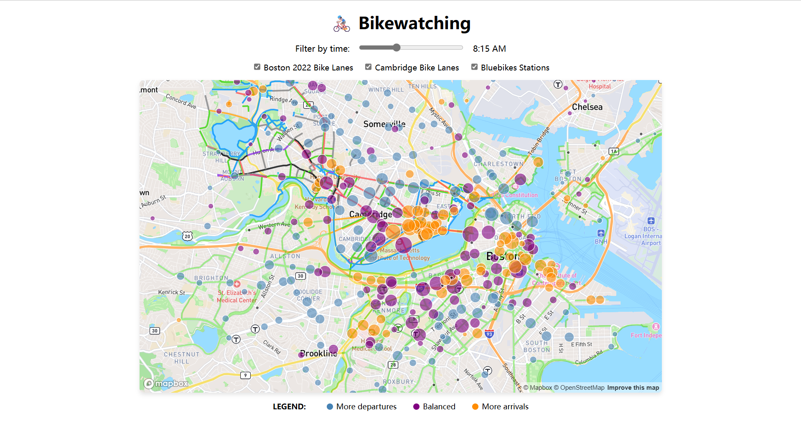
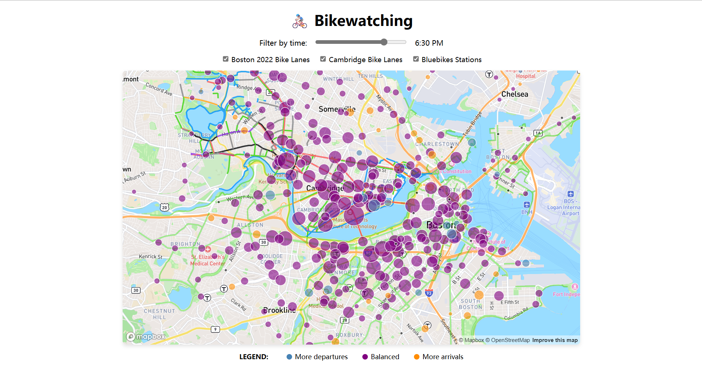

Bikewatching: Boston Bike Traffic

Morning peak (8:15 AM): rides cluster toward downtown and MIT, indicating strong inbound commuter flows.

Evening peak (6:30 PM): rides radiate outward from downtown and campus stations toward residential areas, reflecting outbound commuting.